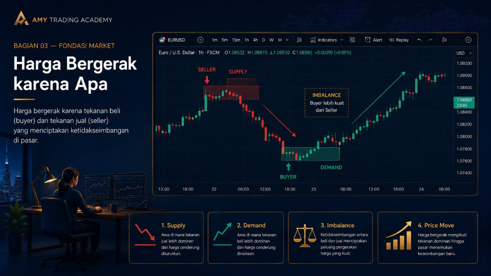
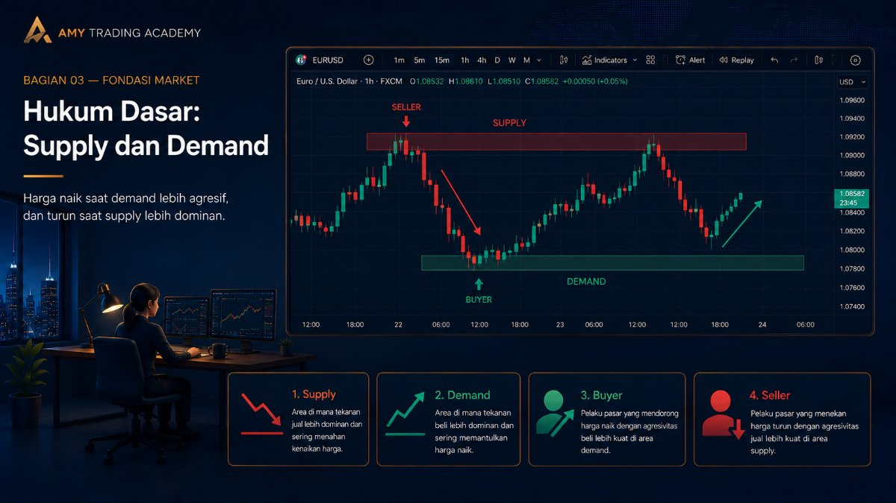
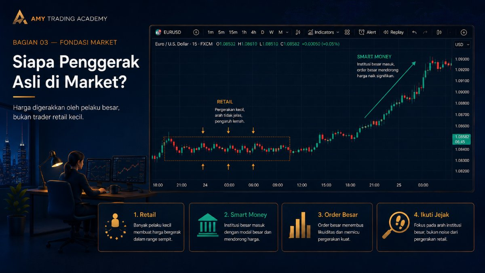
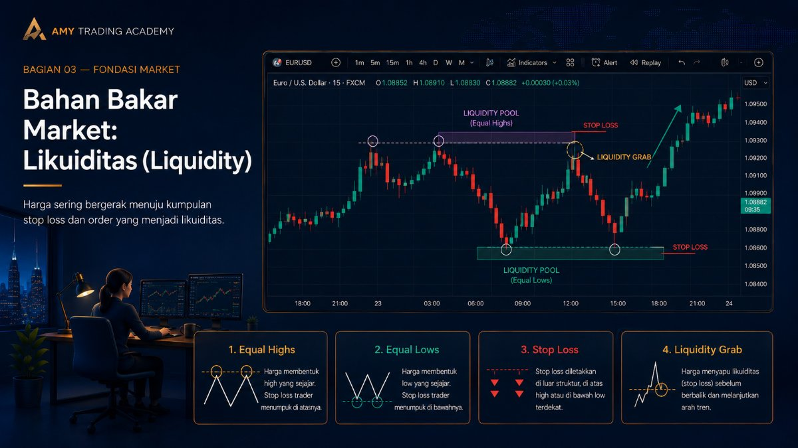

Harga Bergerak karena Apa

Pernah nggak kamu duduk mandangin chart, ngeliat harga naik turun, terus kepikiran: "Sebenarnya, siapa sih yang mindahin harga ini? Kok bisa tiba-tiba terbang, kok bisa tiba-tiba terjun bebas?"
Banyak trader pemula mengira harga bergerak karena indikator. Mereka pikir, "Oh, karena RSI-nya udah overbought, makanya harga turun." Atau, "Oh, karena garis Moving Average-nya silang (crossover), makanya harga naik." Ini pemahaman yang salah total.
Indikator tidak menggerakkan harga. Indikator cuma alat bantu matematika yang menghitung harga di masa lalu. Lalu, apa dong yang bikin harga bergerak?
Hukum Dasar: Supply dan Demand

Di semua pasar keuangan di dunia—entah itu Forex, Kripto, Saham, atau bahkan pasar tradisional—harga hanya bergerak karena satu alasan mendasar: Penawaran (Supply) dan Permintaan (Demand).
Mari kita pakai analogi sederhana: Pasar Cabai.
Bayangkan kamu pergi ke pasar tradisional. Di sana ada 10 pedagang cabai, dan masing-masing punya 10 kg cabai. Harga normalnya Rp 50.000 per kilo. Tiba-tiba, ada gosip bahwa bulan depan panen cabai gagal total secara nasional. Apa yang terjadi?
- Demand Naik: Ibu-ibu rumah tangga panik dan berebut memborong cabai hari itu juga untuk stok.
- Supply Berkurang: Pedagang melihat banyak yang mau beli, akhirnya mereka jual cabai yang tersisa dengan harga lebih mahal, misalnya Rp 80.000 per kilo. Ibu-ibu tetap beli karena butuh.
Harga cabai naik karena pembeli (Demand) lebih agresif daripada penjual (Supply). Sebaliknya, kalau panen cabai lagi melimpah ruah, tapi yang beli sedikit, pedagang akan banting harga supaya cabainya cepat laku. Harga turun.
Siapa Penggerak Asli di Market?

Di pasar finansial seperti Forex, prinsipnya sama persis. Bedanya, transaksinya terjadi dalam hitungan milidetik secara digital. Saat jumlah pembeli (Buyer) yang mau beli di harga pasar (market order) lebih besar daripada ketersediaan barang di harga tersebut, harga terpaksa naik mencari penjual (Seller) di harga yang lebih tinggi.
Fakta Pahit: Trader retail seperti kita (kamu dan saya) modalnya terlalu kecil untuk menggerakkan harga. Biarpun kamu open posisi 10 lot standar, market nggak akan peduli.
Yang bisa menggerakkan harga adalah mereka yang punya dana super jumbo. Kita menyebutnya Smart Money, Institusi Besar, Bank Sentral, atau Market Maker. Mereka ini bertransaksi bukan dengan ukuran lot puluhan atau ratusan, melainkan ribuan hingga jutaan lot senilai miliaran dolar sekali pukul.
Bahan Bakar Market: Likuiditas (Liquidity)

Nah, masalahnya begini. Institusi besar tidak bisa asal klik tombol "Buy" sesuka hati mereka.
Kenapa? Karena kalau mereka mau Beli 10.000 lot di harga 1950, harus ada orang yang mau Jual 10.000 lot di harga 1950 juga. Kalau di harga 1950 cuma ada penjual sebanyak 2.000 lot, maka pesanan mereka yang sisa 8.000 lot akan "nyangkut" dan tereksekusi di harga yang jauh lebih buruk (ini yang disebut slippage besar).
Supaya Institusi bisa mengeksekusi pesanan raksasa mereka tanpa merusak harga pasar, mereka butuh yang namanya Liquidity (Likuiditas). Likuiditas adalah kumpulan order yang siap dieksekusi (berupa Stop Loss atau Pending Order).
Algoritma Pencarian Harga
Market modern tidak bergerak secara acak. Harga bergerak melalui algoritma (sering disebut IPDA - Interbank Price Delivery Algorithm) yang tugasnya sangat jelas: Mencari likuiditas untuk memenuhi pesanan Institusi.
Di mana likuiditas ini berada? Biasanya ngumpul di atas titik tertinggi (High) atau di bawah titik terendah (Low) yang terlihat jelas di chart. Di situlah para trader retail meletakkan Stop Loss mereka. Uang-uang retail dari Stop Loss inilah yang akan "dimakan" dan dijadikan bahan bakar (bensin) oleh Institusi untuk menggerakkan harga ke arah yang mereka mau.
Analogi Likuiditas: Anggaplah pergerakan harga sebagai sebuah bus besar (Institusi). Bus ini butuh bensin untuk jalan. Bensinnya adalah SPBU yang ada di sepanjang jalan (Likuiditas / kumpulan Stop Loss trader retail). Harga akan bergerak mendatangi SPBU tersebut, mengisi bensin, barulah melaju ke tujuan aslinya.
Kesimpulan Penting
Dari sini kita bisa menarik pelajaran yang sangat penting dalam trading:
- Harga bergerak untuk menyeimbangkan penawaran dan permintaan (menutupi gap/imbalance).
- Harga bergerak untuk mengambil likuiditas (memakan Stop Loss retail sebagai bahan bakar Institusi).
- Trader retail tidak bisa mengendalikan arah market. Tugas kita bukan menebak arah secara asal, tapi membaca jejak kaki Institusi (Smart Money) di chart.
Kalau kita tahu di mana Institusi kemungkinan besar mengambil bahan bakar, kita bisa ikut "menumpang" bus tersebut. Kita tidak melawan arus, kita ikut berselancar bersama para paus (Big Players).
Pahami konsep pergerakan harga ini sebagai fondasi utama kamu. Di bab-bab selanjutnya, kita akan mulai membedah bagaimana wujud jejak kaki Institusi ini di chart menggunakan konsep SMC/ICT.